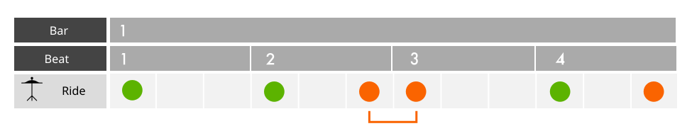

1. 弹跳起伏的律动
1. 弹跳起伏的律动
在节奏世界中，存在着一种被称为“弹跳起伏（Bounce）”的律动。首先请对比聆听以下两段音频：
上面是一段常规的律动，而下面则是带有弹跳感的律动。这种“弹跳律动”想必大家绝不陌生，是一种用“蹦蹦跳跳”来形容最为贴切不过的轻快节奏。 这两段节奏是拍号或速度不同吗？但只要试着跟着打拍子就会发现：两者完全是速度相同的四拍子。
看吧。那么，两者究竟有着怎样的本质差异呢？
区别在于一拍在微观上的均分方式——亦即节拍细分（Subdivision）。正如我们在《节拍与细分》一文中所述，在常规对称节奏中，拍子始终通过反复二等分被切割为4、8、16等份，时间被严丝合缝均等瓜分：

与此相对，“弹跳律动”则是将一拍在底层均分为3等份！ 随后，将基础时值按“2 : 1”的长短比例倾斜分配，偶尔按“1 : 1 : 1”完全均分在一拍中敲击3次。

它摆脱了“嗒咔嗒咔”这种1 : 1对半切分的刻板工整，转而采用“嗒～咔嗒～咔”这种2 : 1非对称的倾斜切割。这种体感宛如欢快跳跃的蹦跳步伐，因而常被形象地唤作“跳跃节拍”。在乐理规范中，这种节拍被称为Shuffle（摇摆节拍 / 洗牌律动）；反之，将完全没有Shuffle摇摆的平直工整节拍称为Square（方正节拍），亦常被称为Straight或Even。
由于自带欢快跃动的步伐感，Shuffle律动极擅长烘托雀跃欢欣、心潮澎湃的氛围，在动感欢畅的歌曲中备受青睐。
Shuffle节拍经典曲例
在广泛聆听的过程中，Shuffle所独具的身体律动感想必已不知不觉融入了肌肉记忆吧？ 伴奏中多见钢琴欢快弹拨切分和弦、或是电吉他铿锵有力地阵阵轰鸣。
疾速节奏与Shuffle的碰撞
在上述歌单那种轻盈漫步的舒适速度下，它散发出明快愉悦的气息；然而若直接将速度飙升，它就会蜕变为与高燃滚烫的硬摇滚绝配的狂暴引擎。
闲适的BPM 130摇摆节拍
滚烫高燃的BPM 200摇摆节拍
这必然是大家在摇滚经典中耳熟能详的心跳脉搏！堪称摇滚史最负盛名的招牌节拍之一。
在第I章中以“摩顿节拍（Motown Beat）”介绍过的经典律动，其底层骨架基本上都是彻底Shuffle摇摆的。这类纯正摇滚范儿的背后，正是Shuffle在暗中注入灵魂力量。
爵士乐与Shuffle
因其绝佳的摇曳感而在摇滚与流行乐坛大放异彩的Shuffle，在爵士乐体系中更是不可或缺的血脉基石。
不过在爵士乐语境中，人们很少直呼“Shuffle”，而是通称为“Swing（摇摆）”。同样是“弹跳起伏的节拍”，“Swing”这一词汇往往内蕴着某种更为深邃的爵士风骨。在爵士专业圈层中谈及Swing，它往往指代比单纯2:1更微妙的动态倾斜比例、甚至是乐手特意将小节强拍落点微妙拖后所营造出的黏滞弹性——它包罗万象地涵盖了一切通过脱离死板量化网格（Grid）所捕获的愉悦韵律，因而至今在学术上并没有单一死板的封闭定义[1]。
Swing经典曲例
虽然年代各异，但尤其在1920至1940年代的经典大乐队爵士标准曲中，这种典雅迷人的Swing摇摆早已化作永恒的时代记忆。
2. 半速摇摆节拍（Half-Time Shuffle）
Shuffle虽然动感十足，但由于其底层三等分切割比常规二等分更为密集细碎，在速度拉快时难免会面临听感极度逼仄仓促、忙碌吵闹的窘境。
若是在狂热的硬摇滚中尚可成立，在常规编曲中未免显得过于嘈杂焦虑。在此，我们可以引入前文学习过的“半速感（Half-Time Feel）”思维，将底鼓与军鼓敲击的宏观频次直接腰斩减半：

瞬间便营造出了无比沉稳宽阔、从容不迫的奢华质感！踩镲虽然坚守着原初的高速细密刻度，但鉴于底鼓与军鼓对整体节拍重心的绝对统治力，宏观体感速度实际上已被精准减半（因此上方音频中数拍子的速度也相应减半了）：


我们再次单独聆听架子鼓的声部：
常规的Shuffle多以八分音符八拍子（8-beat）为骨架，而一旦蜕变至此，便实际上化身为了具有十六分音符密度的十六拍子（16-beat）。像这样将底鼓与军鼓的步进节奏腰斩、从而呈现十六拍子细腻质感的摇摆形态，被称为“半速摇摆节拍（Half-Time Shuffle）”。据传该技法是由传奇流行摇滚乐队TOTO的殿堂级鼓手杰夫·波卡罗（Jeff Porcaro）在名篇《Rosanna》等作品中确立并发扬光大的。
视频中正是杰夫·波卡罗本人，他在此极其生动地亲自示范拆解了Half-Time Shuffle的精髓所在。
半速摇摆节拍经典名曲
初听此类节拍可能会觉得与常规慢板律动略难区分。尝试在心中随着节奏哼唱“嗒～咔嗒～咔”，便能清晰捕获微观声部中那股精妙绝伦的隐秘弹跳。
3. 倾斜比例与衍生变体
在行文中我们看似在“偶数均分”与“三等分摇摆”之间做非黑即白的二选一，但在当代真实制作中，游弋于两者之间的中庸过渡地带同样极为普遍。某些段落弹跳而某些段落平直、或者全队之中唯独鼓组独自摇摆等复合交错形态层出不穷，这种兼收并蓄的多样性正是Shuffle博大精深的魅力所在。
这是在不同小节与拍点上细腻微调Shuffle倾斜深浅的鼓点示范。由于融入了捉摸不定的“随性呼吸感”，机器的冰冷被一扫而空，展现出了极为浓郁的人性温存。在不希望呈现露骨摇摆、却渴望赋予乐曲弹性微动感时，精细微调倾斜度与声部配比是不二法门。
实际曲例剖析
虽然鼓组大体在遵循Shuffle弹跳，但中途会毫无预兆地插入完全平直规整的敲击，整首歌呈现出在摇摆与平直之间自在游弋的松弛质感。
在此曲中不同乐器声部各自承担着不同程度的倾斜，甚至同一声部在乐句中途也会发生微调。在上述片段中，唱到“Put it up!”时声部并未摇摆，而到了Drop炸裂前夕唱到“Make it to the make it to the”处，则极其鲜明地切入了强烈的Shuffle弹跳。
倾斜比例与曲目速度的声学博弈
关于爵士乐中Swing的弹跳深浅比例，在欧美声学与音乐心理学界早已成为硬核的量化科研课题。著名学者的一项权威实验数据显示：在顶级爵士鼓手的实战演奏中，曲目速度（Tempo）越慢，摇摆倾斜度往往越夸张；而随着速度飙升至极端高速，摇摆幅度会自发收缩退化，无限向等分均值靠拢[2]。
BPM=120环境下的Swing示范
BPM=270环境下的Swing示范
上述两段音频精准复现了这一声学生理规律：在BPM=120的慢板中，摇摆倾斜度甚至超越了常规的2 : 1，在部分拍点上达到了接近3 : 1的极端悬殊比例；反之在BPM=270的超高速下，倾斜幅度大幅收敛至大约5 : 3的微弱微动。在疾速飞驰时，人耳其实已经很难分辨出具体是几比几的比例，但依靠对大师实录声学波形的逆向拆解，这些沉睡在顶级摇摆感幕后的深层密码终于大白于天下。
究其深层根源，可以推测：速度越快，反拍击打与接踵而至的下一拍正拍之间的物理绝对时间间隔就会被极度压缩：


在BPM=120时，这两记敲击之间的绝对时间差约为167毫秒；而到了BPM=270时，该窗口被急剧压缩至仅剩约74毫秒！对于高速持续挥槌击镲的鼓手右手肌肉而言，在74毫秒内完成如此急速的弹跳在物理生理上极难顺畅实现，机体本能自发地削弱了跳跃幅度；反之在极慢速度下，若机械恪守2 : 1，后半截留白又会让人觉得过于空旷，乐手便本能地倾向于进一步将反拍往后拖移……这种与人体工学紧密交融的生理体感，正是催生这一客观规律的无形之手。
在DAW编曲宿主中通过MIDI制作微调Swing感时，正是这些超脱死板量化网格（Grid）之外的呼吸微动，构成了赋予作品鲜活生命力的灵魂。
总结
- 摒弃1 : 1（嗒咔嗒咔）的均分、转而采用2 : 1（嗒～咔嗒～咔）的非对称切割，被称为“Shuffle”或“Swing”。通俗中亦常称为“弹跳律动”。
- “Swing”主要在爵士乐体系中调用，承载着爵士乐手针对节奏呼吸感的多元化微观律动诠释，在学术上并没有单一死板的封闭定义。
- Shuffle拥有极为宽广的变体空间，包括不恪守死板2:1比例、仅在局部乐器中渗透摇摆等。